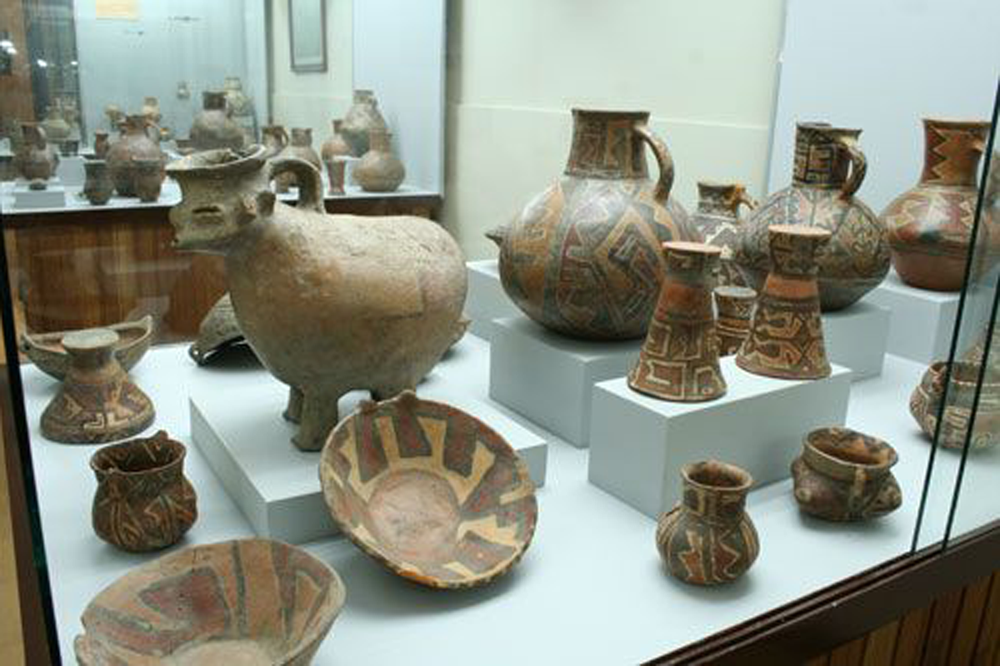
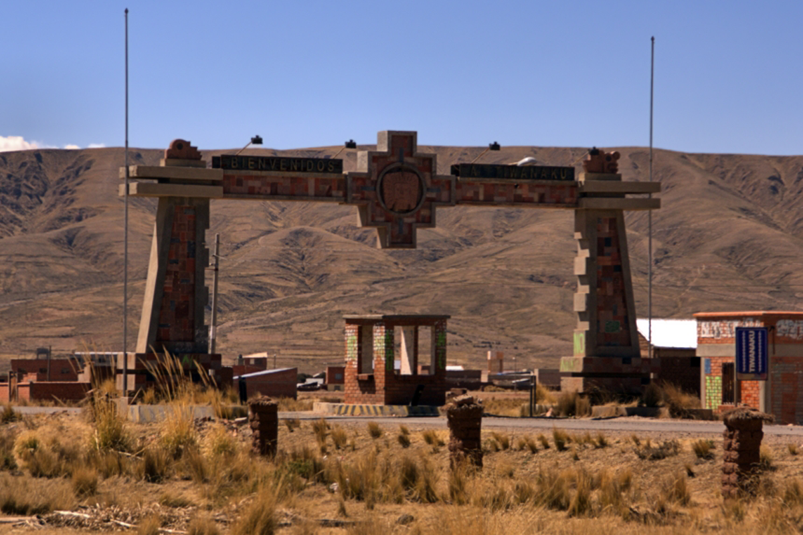
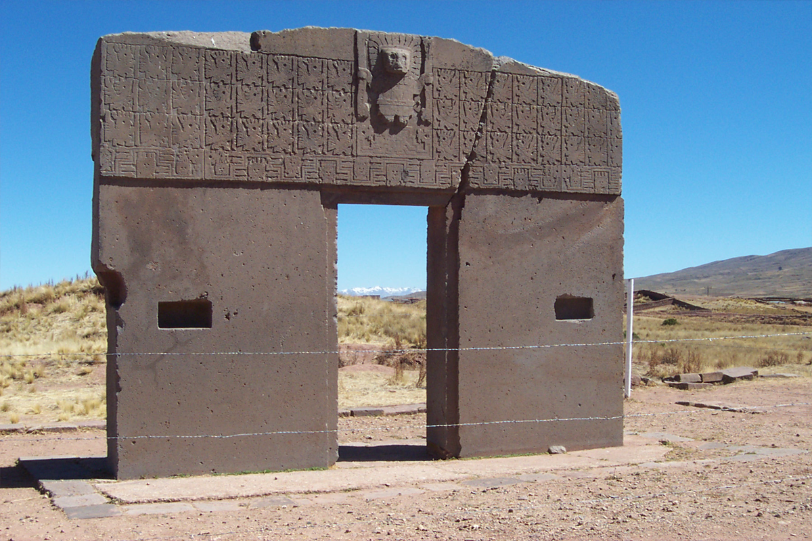
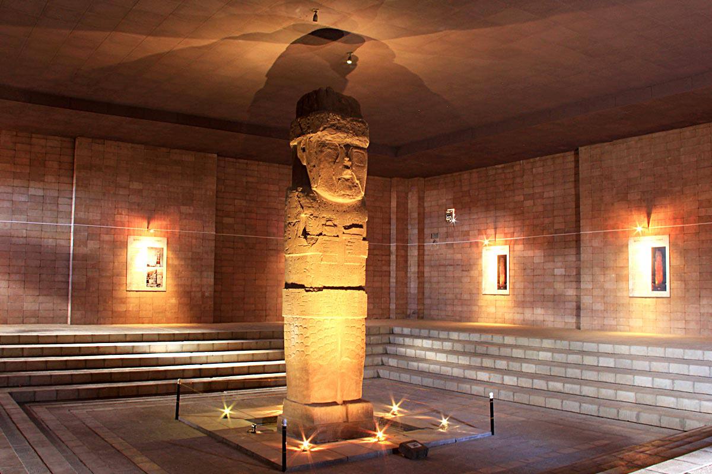
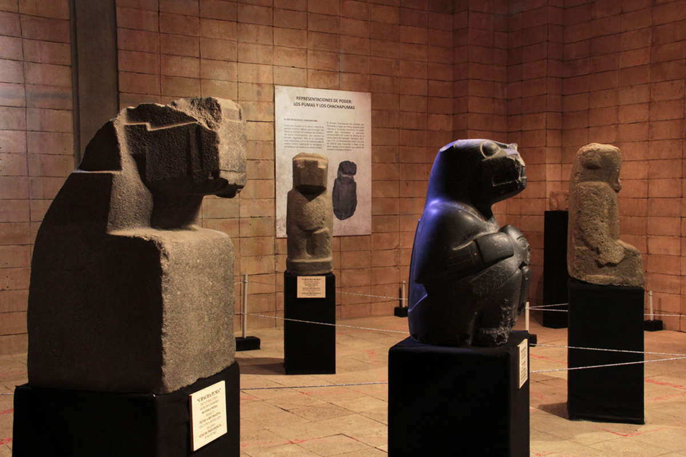
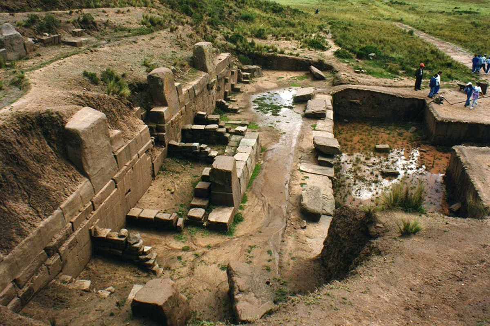
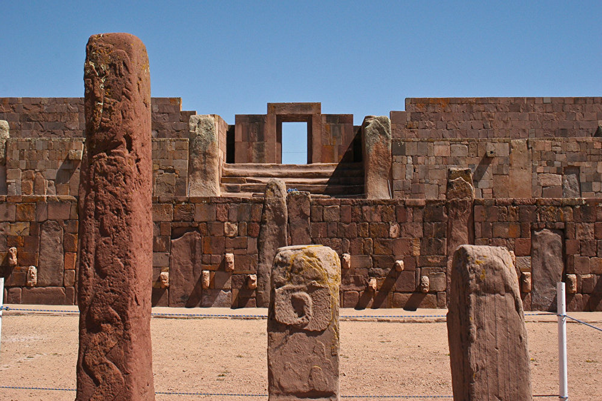

Ceramica
Coleccion de ceramica en el museo
leer mas

Puerta
entrada principal a las ruinas
leer mas

Puerta del sol
monumento echo para el dios sol
leer mas

Puerta del sol
monumento echo para el dios sol
leer mas

Monolito
El monolito Bennett en el museo de Tiwanaku
leer mas

Piedras talladas
Coleccion de piedras talladas en el museo
leer mas

Ruinas
ruinas de la epoca preispanica
leer mas

Con vistas al templo semi-subterráneo con Kalasasaya en el fondo
leer mas